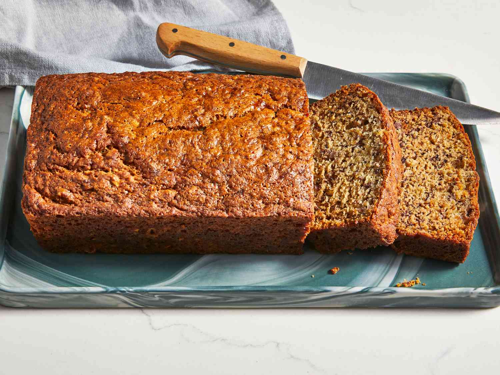

Banana Bread Recipe

Savor the simple pleasures of homemade comfort with our classic banana bread recipe. This beloved treat is a timeless favorite, renowned for its moist, tender crumb and the sweet aroma of ripe bananas. Whether enjoyed for breakfast, as an afternoon snack, or as a warm slice with a cup of tea, our banana bread is a heartwarming, sliceable hug from the kitchen.
- 3 ripe bananas, mashed
- 1 cup white sugar
- 1 egg
- ¼ cup melted butter
- 1 ½ cups all-purpose flour
- 1 teaspoon baking soda
- 1 teaspoon salt
- Gather all ingredients. Preheat the oven to 325 degrees F (165 degrees C). Grease a 9x5-inch loaf pan.
- Combine bananas, sugar, egg, and butter together in a bowl. Mix flour and baking soda together in a separate bowl; stir into banana mixture until batter is just mixed.
- Stir in salt; pour batter into the prepared loaf pan.
- Bake in the preheated oven until a toothpick inserted in the center of the bread comes out clean, about 1 hour.
- Enjoy!